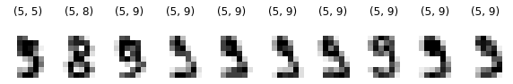
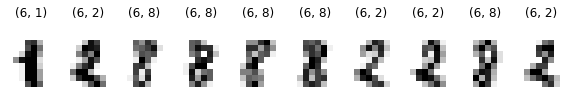
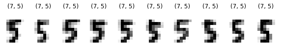
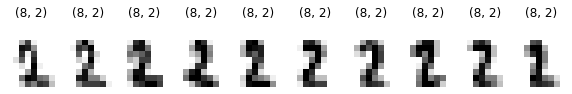
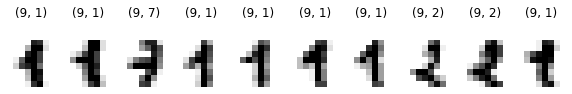
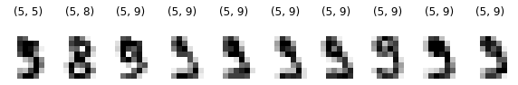
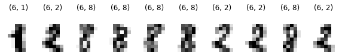
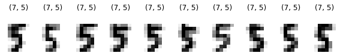
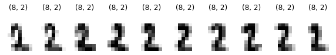
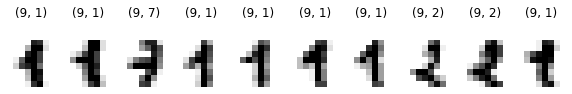

Dimensionsreduktion
Inhalt
Dimensionsreduktion¶
Überblick¶
Wir betrachten Methoden, um lineare Modelle bei Regressionsproblemen zu vereinfachen bzw. bei hochdimensionalen Datensätzen Dimensionsreduktionen durchzuführen. Das wesentliche Werkzeug dazu ist die Singulärwertzerlegung
Die Singulärwertzerlegung kommt ursprünglich aus der linearen Algebra. Dort zeigt man, dass jede Matrix \(A\in\mathbb{R}^{m\times n}\) sich in
mit
und \(\sigma_1 \ge \ldots \ge \sigma_r > 0\), \(r \le \min(m,n)\), zerlegen lässt, wobei \(U,V\) orthonormal sind.
Geometrisch bedeutet das, dass man immer orthonormale Basen \(V\) im Urbild-Raum und \(U\) im Bildraum finden kann, so dass sich die zu \(A\) gehörige lineare Abbildung bezüglich dieser Basen als Diagonalmatrix \(\Sigma\) darstellen lässt.
Die Singulärwertzerlegung stellt somit eine Verallgemeinerung der Diagonalisierbarkeit quadratischer Matrizen (und damit der Eigenwert- und Eigenvektor-Berechnung) dar.
Andererseits kann man die Berechnung von Singulärwerten und Singulärvektoren aber auch als restringiertes konvexes Optimierungsproblem beschreiben. Für den ersten Spaltenvektor \(v_1\) von \(V\) gilt
Allgemein gilt mit \(V_k = \text{span}(v_1,\ldots,v_k)\)
Für die numerische Berechnung von Singulärwerten und -vektoren haben wir damit die Möglichkeit, Algorithmen aus beiden Bereichen anzuwenden. Welche Verfahren dabei effizienter sind, hängt stark von der konkreten Aufgabenstellung ab.
Modellvereinfachung¶
Regressionsproblem¶
Wir betrachten wieder das lineares Regressionsproblem aus dem letzten Abschnitt
import autograd.numpy as np
from autograd import jacobian
import scipy as sp
import matplotlib.pyplot as plt
import sympy as sy
seed = 17
from IPython.display import Math
%precision 5
np.set_printoptions(precision=4)
m = 100
delta = 1e-1
h = lambda x : 5 - 7*x + 3 * x**2
np.random.seed(seed)
x = np.random.rand(m)
y = h(x) + delta * np.random.randn(*x.shape)
%matplotlib inline
plt.plot(x, y, 'b.');
benutzen aber als Modellfunktion
bei unverändertem Loss
Die Modellfunktion ist „überparametriert“:
mit \(g\) können beliebige Geraden erzeugt werden
dafür reichen aber bereits zwei Parameter
Mit
und
können wir \(l\) umschreiben zu
und erhalten
Unsere Zielfunktion ist also nach wie vor quadratisch und konvex.
Wir wenden jetzt nacheinander die Algorithmen aus dem letzten Abschnitt an.
GD¶
Direkte Anwendung von GD liefert folgende Ergebnisse.
npar = 3
def g(x, w):
return w[0] + w[1] * (x - 1) + w[2] * (x - 2)
#return w[0] + w[1] * x + w[2] * x**2 + w[3] * x**3
def l(w):
return ((g(x, w) - y)**2).mean()
l1 = jacobian(l)
def GD(w0, l1, gamma = 1.0, nit = 20):
ww = [w0]
w = w0.copy()
for k in range(nit):
w = w - gamma * l1(w)
ww.append(w)
return ww
def evalw(w, x, y):
# Fit
plt.figure(1)
plt.plot(x, y, '.');
xp = np.linspace(x.min(), x.max())
plt.plot(xp, g(xp, w), 'r');
plt.xlabel('$x$')
plt.ylabel('$y$', rotation=0)
def evalwl(w, l, x, y):
# Konvergenzgeschwindigkeit
plt.figure(2)
plt.semilogy(list(map(l, w)))
plt.xlabel('$k$')
plt.ylabel('$l(w^{(k)})$', rotation=0)
w0 = np.zeros(npar)
w = GD(w0, l1, gamma = 0.1, nit = 300)
evalw(w[-1], x, y)
evalwl(w, l, x, y)
print("w = {}, l(w) = {:f}".format(w[-1], l(w[-1])))
w = [-0.9954 -2.5079 -1.5126], l(w) = 0.055993
Ändern wir den Startwert so erhalten wir zwar einen ähnlichen Wert für \(l\), aber einen anderen Parametersatz \(w\).
w0 = np.ones(npar)
w = GD(w0, l1, gamma = 0.1, nit = 300)
evalw(w[-1], x, y)
evalwl(w, l, x, y)
print("w = {}, l(w) = {:f}".format(w[-1], l(w[-1])))
w = [-0.6512 -2.828 -1.1768], l(w) = 0.056096
GD zeigt dabei unverändertes Konvergenzverhalten.
Newton¶
Die Iterationsvorschrift für das einfache Newton-Verfahren lautet
In unserem Beispiel ist
Da die Spalten von \(X\) linear abhängig sind, hat \(X\) keinen vollen Rang so dass die Hessematrix \(l''\) singulär (nur positiv semidefinit) ist. Somit ist das einfache Newton-Verfahren nicht anwendbar.
Singuläre Hesse-Matrizen treten bei Optimierungsproblemen häufig auf, weshalb es eine ganze Reihe von modifizierten Newton-Varianten gibt (gedämpfte Newton-Verfahren, Quasi-Newton, Gauß-Newton, Trust-Region, siehe auch scipy.optimize.minimize), die dieses Problem auf unterschiedliche Art und Weise umschiffen.
Wir wenden BFGS an, ein Quasi-Newton-Verfahren dass adaptiv spd-Näherungen \(B^{(k)}\) der Hesse-Matrix benutzt. Für \(w^{(0)}, B^{(0)}\) gegeben berechnet man
mit
\(\gamma^{(k)}\) wird dabei durch Liniensuche bestimmt.
Wir benutzen die BFGS Implementierung von SciPy und erhalten für zwei unterschiedliche Startwerte folgende Ergebnisse.
from scipy.optimize import minimize
w0 = np.zeros(npar)
w = minimize(l, w0, method = 'BFGS', jac = l1, options={'disp': True} ).x
evalw(w, x, y)
print("w = {}, l(w) = {:f}".format(w, l(w)))
Optimization terminated successfully.
Current function value: 0.055920
Iterations: 8
Function evaluations: 9
Gradient evaluations: 9
w = [-1.0151 -2.532 -1.5169], l(w) = 0.055920
w0 = np.ones(npar)
w = minimize(l, w0, method = 'BFGS', jac = l1, options={'disp': True} ).x
evalw(w, x, y)
print("w = {}, l(w) = {:f}".format(w, l(w)))
Optimization terminated successfully.
Current function value: 0.055920
Iterations: 7
Function evaluations: 8
Gradient evaluations: 8
w = [-0.6817 -2.8653 -1.1836], l(w) = 0.055920
Die Ergebnisse sind vergleichbar mit denen von GD, allerdings ist die Anzahl der Iterationen (und damit der Aufwand) deutlich geringer.
Normalgleichungen¶
Wir betrachten jetzt das Normalgleichungssystem
Da \(X\) linear abhängige Spalten hat, ist \(X^TX\) positiv semidefinit, also nicht regulär. Wie wir oben gesehen haben, existieren aber immer Lösungen dieses Systems.
Wie lösen wir jetzt numerisch dieses singuläre Gleichungssystem?
Direkte Verfahren (LU, Cholesky, QR) sind prinzipiell anwendbar, leiden aber oft an Stabilitätsproblemen.
Bei den iterativen Verfahren betrachten wir wieder CGLS, wenden es auf unser Beispielproblem an und erhalten für zwei unterschiedliche Startwerte die folgenden Ergebnisse.
def CGLS(w0, X, y, nit = 20):
ww = [w0]
w = w0.copy()
s = y - X.dot(w)
r = X.T.dot(s)
p = r.copy()
rr = r.dot(r)
for k in range(nit):
Xp = X.dot(p)
al = rr / Xp.dot(Xp)
w = w + al * p
s = s - al * Xp
r = X.T.dot(s)
rrn = r.dot(r)
be = rrn / rr
p = r + be * p
rr = rrn
ww.append(w)
return(ww)
wX = np.eye(npar)
X = np.array([g(x, wX[k]) for k in range(npar)]).T
w0 = np.zeros(npar)
w = CGLS(w0, X, y)
evalw(w[-1], x, y)
print("w = {}, l(w) = {:f}".format(w[-1], l(w[-1])))
w = [-1.0151 -2.532 -1.5169], l(w) = 0.055920
w0 = np.ones(npar)
w = CGLS(w0, X, y)
evalw(w[-1], x, y)
print("w = {}, l(w) = {:f}".format(w[-1], l(w[-1])))
w = [-0.6817 -2.8653 -1.1836], l(w) = 0.055920
CGLS erreicht bereits im zweiten Schritt wieder (eine) exakte Lösung der Normalgleichungen. Je nach Startwert erhält man unterschiedliche Parameter \(w\), die aber die selbe Modellfunktion parametrieren.
Pseudoinverse und Singulärwertzerlegung (SVD)¶
Um diese Mehrdeutigkeiten zu beseitigen suchen wir jetzt eine Lösung \(w^+\) der Normalgleichungen, die selbst möglichst kleine Norm \(\|w\|_2\) hat, also
Dieses Problem hat immer eine eindeutige Lösung \(w^+\). Sie hängt linear von \(y\) ab, d.h. zu \(X\in\mathbb{R}^{m\times n}\) gibt es eine eindeutige Matrix \(X^+\in\mathbb{R}^{n\times m}\), die Pseudoinverse, mit
Es gibt direkte Verfahren (über QR-Zerlegungen) um \(X^+\) zu berechnen, in der Praxis wird \(X^+\) in der Regel über die Singulärwertzerlegung bestimmt.
Jede Matrix \(X\in\mathbb{R}^{m\times n}\) lässt sich zerlegen in
wobei \(U\in\mathbb{R}^{m\times m}\), \(V\in\mathbb{R}^{n\times n}\) orthonormal sind und
Dabei sind
die Singulärwerte und \(r\) der Rang von \(X\).
Damit können wir jetzt das Normalgleichungssystem mit Zusatzbedingung (also \(w^+ = X^+ y\)) über das dazu äquivalente Optimierungsproblem
ganz einfach lösen. Für orthonormale Matrizen \(Q\) gilt \(\|Qw \|_2 = \|w \|_2\), \(Q^{-1}=Q^T\), und somit
mit
und \(\tilde{y} = U^Ty\). Wir müssen jetzt also die Lösung \(\tilde{w}^+\) von
bestimmen und erhalten \(w^+ =V\tilde{w}^+\).
Nun ist aber
so dass \(\|\Sigma \tilde{w} - \tilde{y} \|_2^2\) minimal wird für
Damit sind die ersten \(r\) Komponenten von \(\tilde{w}^+\) bestimmt. Wegen
wird \(\|\tilde{w}\|_2^2\) minimal für
Somit ist
und \(w^+ =V\tilde{w}^+\). Wegen \(\tilde{y} = U^Ty\) kann man \(w^+\) jetzt schreiben als
Ist also
eine Singulärwertzerlegung von \(X\), dann ist die Pseudoinverse
und \(\Sigma^+\) ist die Pseudoinverse von \(\Sigma\).
Wie berechnet man nun numerisch eine Singulärwertzerlegung? Einen ersten Hinweis bekommt man durch folgende Beziehungen
Da \(U,V\) orthonormal und quadratisch und \(\Sigma^T \Sigma\), \(\Sigma \Sigma^T\) Diagonalmatrizen sind, haben wir damit eine Eigenwert-/Eigenvektorzerlegung der beiden quadratischen symmetrischen Matrizen \(X^T X\), \(X X^T\), d.h.
\(\sigma_i^2\), \(i = 1,\ldots,r\), sind die positiven Eigenwerte von \(X^T X\), \(X X^T\), alle weiteren Eigenwerte sind \(0\)
die Spalten von \(V\) sind die Eigenvektoren von \(X^T X\)
die Spalten von \(U\) sind die Eigenvektoren von \(X X^T\)
Damit könnte man numerisch wie folgt vorgehen:
berechne (z.B. mit QR-Iteration mit Shift) alle Eigenwerte \(\lambda_i\) und Eigenvektoren \(v_i\) von \(X^T X\),
\[\begin{equation*} \lambda_1 \ge \ldots \ge \lambda_r >0, \quad \lambda_{r+1} = \ldots = \lambda_n = 0 \end{equation*}\]\(\sigma_i = \sqrt{\lambda_i},\quad i = 1,\ldots,r\)
\(V = \big(v_1,\ldots,v_n \big)\)
aus \(U \Sigma = XV\) folgt für die \(i\)-te Spalte der Matrizen
\[\begin{equation*} (U \Sigma)_i = u_i \sigma_i, \quad (XV)_i = Xv_i \end{equation*}\]somit
\[\begin{equation*} u_i = \frac{1}{\sigma_i}Xv_i, \quad i = 1,\ldots,r \end{equation*}\]ergänze \(u_1,\ldots,u_r\) zu einer Orthonormalbasis \(u_1,\ldots,u_m\) (z.B. mit modifiziertem Gram-Schmidt) und setze
\[\begin{equation*} U = \big(u_1,\ldots,u_m \big) \end{equation*}\]
Alternativ könnte man natürlich auch über die Eigenwerte/Eigenvektoren von \(XX^T\) die SVD berechnen. Beide Varianten sind nicht optimal (Aufwand, Kondition).
Der heute gebräuchlichste Algorithmus vermeidet die explizite Berechnung von \(X^TX\). Er basiert zunächst auf der Beobachtung, dass die Singulärwerte von \(X\) identisch sind mit den Singulärwerten von
Im ersten Schritt wird mit einer Folge von Householder-Transformationen von links und rechts \(T,S\) so bestimmt, dass
was das Analogon zur Hessenbergtransformation bei der Eigenwertberechnung ist.
Der zweite Schritt beruht auf einer angepassten QR-Iteration zur Berechnung der Singulärwerte (Wurzel der Eigenwerte von \(R^TR\)), ohne \(R^TR\) explizit zu berechnen.
Wir wenden nun die Pseudoinverse an, um unser unterbestimmtes Regressionsproblem zu lösen.
w = np.linalg.pinv(X).dot(y)
evalw(w, x, y)
print("w = {}, l(w) = {:f}".format(w, l(w)))
w = [-1.0151 -2.532 -1.5169], l(w) = 0.055920
Abgeschnittene Singulärwertzerlegung (TSVD)¶
Jede Matrix \(X\in\mathbb{R}^{m\times n}\) kann in
\(U\in\mathbb{R}^{m\times m}\), \(V\in\mathbb{R}^{n\times n}\),
zerlegt werden.
Da in \(\Sigma\) nur die ersten \(r\) Diagonalelemente ungleich \(0\) sind folgt
mit
sowie
Ist \(r \ll \min(m,n)\), so sind Matrixprodukte über \(U_r\Sigma_r V_r^T\), \(V_r \Sigma_r^{-1} U_r^T\) deutlich günstiger zu Berechnen als Produkte die direkt \(X\), \(X^+\) benutzen.
Nehmen wir nun an, dass \(X\in\mathbb{R}^{m\times n}\) Singulärwerte \(\sigma_1 \ge \ldots \ge \sigma_k \ge \sigma_{k+1} \ge \ldots \ge \sigma_r > 0\) mit
hat. Damit erhalten wir
\(X_k\) ist eine Rang-\(k\)-Approximation der Rang-\(r\)-Matrix \(X\) (abgeschnittene Singulärwertzerlegung, TSVD), also eine vereinfachte Version unseres ursprünglichen linearen Modells, das durch \(X\) repräsentiert wird. Wegen
ist \(X_k\) für \(k\ll r\) numerisch viel effizienter zu bearbeiten als \(X\).
Wir wenden nun die SVD auf unser Regressionsproblem von oben an und erhalten Singulärwerte
U,s,VT = np.linalg.svd(X)
V = VT.T
s
array([1.8869e+01, 2.7241e+00, 3.0411e-15])
Offensichtlich können wir hier \(k = 2\), wählen d.h. zwei Parameter reichen aus. Betrachten wir die zugehörigen Singulärbasen \(V\)
V
array([[-0.5222, 0.6277, -0.5774],
[ 0.2825, 0.7661, 0.5774],
[ 0.8047, 0.1383, -0.5774]])
dann sehen wir, dass Parameterkombinationen \(w = s(-1,1,-1)^T\), \(s\in\mathbb{R}\), vernachlässigbar sind. Durch Einschränkung auf die ersten beiden Singulärbasen kann man das Modell dann vereinfachen und wir erhalten
k = 2
Xk = X.dot(V[:,:k])
wk = np.linalg.pinv(Xk).dot(y)
w = V[:,:k].dot(wk)
evalw(w, x, y)
print("w = {}, l(w) = {:f}".format(w, l(w)))
w = [-1.0151 -2.532 -1.5169], l(w) = 0.055920
Jetzt betrachten wir zu den selben Daten \(x_i,y_i\) das Regressionsproblem mit Modellfunktion
Einfache Regression liefert das folgende Ergebnis
npar = 4
def g(x, w):
return w[0] + w[1] * x + w[2] * x**2 + w[3] * x**3
wX = np.eye(npar)
X = np.array([g(x, wX[k]) for k in range(npar)]).T
w = np.linalg.pinv(X).dot(y)
evalw(w, x, y)
print("w = {}, l(w) = {:f}".format(w, l(w)))
w = [ 4.9521 -6.5425 2.0585 0.5842], l(w) = 0.010212
Als Singulärwerte von \(X\) erhalten wir
wX = np.eye(npar)
X = np.array([g(x, wX[k]) for k in range(npar)]).T
U,s,VT = np.linalg.svd(X)
V = VT.T
s
array([12.3789, 4.0561, 0.8277, 0.0902])
Hier würden wir bei \(k=3\) abschneiden. Die Regression auf den reduzierten Daten liefert dann
k = 3
Xk = X.dot(V[:,:k])
wk = np.linalg.pinv(Xk).dot(y)
w = V[:,:k].dot(wk)
evalw(w, x, y)
print("w = {}, l(w) = {:f}".format(w, l(w)))
w = [ 4.853 -5.3505 -0.8073 2.4439], l(w) = 0.011277
Dimensionsreduktion über Principle Component Analysis (PCA)¶
Motivation¶
Oft sind die Daten in Form hochdimensionaler Vektoren \(x_j\in \mathbb{R}^m\), \(j=1,\ldots,n\), also
mit \(m\) groß gegeben. Ein typische Beispiel ist die Verarbeitung von Bildern (\(m\) ist die Anzahl der Pixel multipliziert mit der Anzahl der Farbkanäle).
Die direkte Anwendung von numerischen Algorithmen ist dann meistens mit großem Rechenaufwand verbunden. Deshalb versucht man, die Dimension der Daten zunächst zu reduzieren und zwar so, dass der dadurch entstehende Informationsverlust möglichst gering ist.
Wir betrachten den folgenden zweidimensionalen Beispieldatensatz
from sklearn.datasets import make_blobs
X,y = make_blobs(n_features = 2, centers = 1, random_state = seed)
np.random.seed(seed)
T = np.random.rand(2,2)
X = X.dot(T).T
plt.scatter(*X, marker = '.')
plt.axis('equal');
Offensichtlich gibt es eine Richtung, in der die Daten stark variieren. Senkrecht dazu ist die Variation eher gering.
Zur Datenreduktion könnte man nun eine Gerade in die Richtung der starken Variationen legen und die Projektionen der Daten auf diese Gerade betrachten.
Die Projektion für einen Datenpunkt \(x_i\) ist ein Skalar, also eine eindimensionale Größe („Koordinate entlang der Geraden“)
Wenn diese Projektionen für die einzelnen Datenpunkte sich hinreichend stark unterscheiden, dann kann man z.B. ein Klassifikationsverfahren statt auf den zweidimensionalen Originaldaten ohne große Verluste auch auf den eindimensionlen Projektionen der Daten durchführen.
Um die weiteren Betrachtungen zu vereinfachen, zentrieren wir den Datensatz. Den allgemeinen Fall behandeln wir im Anschluss.
X = X - X.mean(axis=1).reshape(-1,1)
U, s, VT = np.linalg.svd(X)
v = U[: ,0]
plt.scatter(*X, marker = '.')
plt.axis('equal');
plt.plot(*(np.c_[-v, v] * 2), 'g')
Xi = X[:,45]
plt.plot(*Xi, 'r.')
pXi = Xi.dot(v) * v
eXi = Xi - pXi
plt.plot(*np.c_[0*pXi, pXi], 'r');
plt.plot(*np.c_[pXi, Xi], 'r:');
plt.plot(*np.c_[0*pXi, Xi], 'r:');
Mathematische Formulierung¶
Gegeben ist also ein zentrierter Datensatz
Wir suchen eine Gerade
so dass die Varianz
der Projektionen von \(x_i\) auf \(u\) maximal wird. Mit der Singulärwertzerlegung \(X = U\Sigma V^T\) erhalten wir
mit
Wir müssen also das Problem
für
lösen. Damit neben der Zielfunktion \(f\) auch die Nebenbedingung \(g\) differenzierbar ist benutzen wir nicht \(\|z\|_2 = 1\) sondern äquivalent \(\|z\|^2_2 = 1\). Beide Funktionen \(f\) und \(g\) sind auch konvex.
Wir stellen nun die Lagrangefunktion
auf und betrachten deren stationäre Punkte. Für die Ableitungen folgt nach der Produktregel
also
bzw.
Als notwendige Bedingung für eine Maximalstelle \(\hat{z}\) muss es ein \(\hat{\lambda}\in\mathbb{R}\) geben mit
Für die Maximalstelle \(\hat{z}\in\mathbb{R}^m\) muss also
gelten, d.h. \(\hat{\lambda}\), \(\hat{z}\) sind Eigenwert und Eigenvektor der Diagonalmatrix
also
wobei \(e_i\) der \(i\)-te Einheitsvektor ist. Als Wert unserer Zielfunktion \(f\) erhalten wir
so dass das gesuchte Maximum für \(i=1\) angenommen wird.
Für unser Ausgangsproblem erhalten wir somit
d.h. die Gerade mit maximaler Varianz der Projektionen wird vom ersten linken Singulärvektor \(u_1\) von \(X\) aufgespannt und die Varianz der Projektion ist durch den zugehörigen Singulärwert \(\sigma_i\) gegeben, oder anders ausgedrückt, \(u_1\) ist der Eigenvektor von \(C = XX^T\) zum größten Eigenwert \(\lambda_1 = \sigma_1^2\) und
Projiziert man die Daten \(X\) jetzt auf \(u_1^\bot\), so reduziert sich die Dimension auf \((m-1)\times n\). Wendet man die selben Überlegungen erneut an, so erhält man als zweite Richtung mit der zweitgrößten Varianz
Setzt man dies nun per Induktion weiter fort, so erhält nach \(r\) Schritten
Die \(u_j\) heißen Hauptkomponenten oder auch Karhunen-Loeve-Richtungen zum Datensatz \(X\).
Die Daten \(X\in \mathbb{R}^{m\times n}\) werden in ein neues Orthonormalsystem der Dimension \(r \le m\) transformiert (Spalten von \(U_r\)). Die neuen Koordinaten sind die Projektionen \(\tilde{X}= U_r^T X\). Für die Varianzen der einzelnen Koordinaten gilt
also
Außerdem gilt
d.h. in \(\tilde{X}\) „stecken alle Variationen von \(X\)“ drin, d.h. bezüglich Unterscheidungsmöglichkeiten der Daten haben wir keine Information verloren.
Damit liegt nun folgende Vorgehensweise zur Dimensionsreduktion nahe:
berechne \(V(X)\)
bestimme zu \(\varepsilon > 0\) ein möglichst kleines \(k\) mit
\[\begin{equation*} \sum_{i=1}^k V(\tilde{X}_{i,\cdot}) = \frac{\sum_{i=1}^k\sigma_i^2}{n-1} \ge V(X) - \varepsilon \end{equation*}\]benutze statt \(X\in \mathbb{R}^{m\times n}\) jetzt \(\tilde{X} = U_k^TX\in \mathbb{R}^{k\times n}\)
Man nimmt dabei einen (geringen) Informationsverlust (\(\varepsilon > 0\)) zugunsten einer Dimensionsreduktion (oft ist \(k\ll m\)) in Kauf.
Bisher haben wir angenommen, dass die Daten \(x_j\) zentriert sind. Die Verallgemeinerung ist recht einfach. Sind die Daten \(x_j\) beliebig, so betrachtet man die zentrierten Größen
Man erhält Hauptrichtungen \(u_j\) und Varianzen \(V(Y_{i,\cdot})\) über die Eigenvektoren und Eigenwerte von
der Kovarianzmatrix der Originaldaten \(X\). Die neuen Koordinaten \(\tilde{Y} = U_r^T(X - \bar{X})\) sind die Projektionen auf die Geraden
d.h. man projiziert auf affine Unterräume.
Beispiel¶
Wir betrachten den folgenden Datensatz.
#%matplotlib notebook
X,y = make_blobs(n_samples=1000, n_features=3, centers=3, cluster_std=1.0, random_state = seed)
X = X.T
from mpl_toolkits.mplot3d import Axes3D
plt.figure()
plt.axes(projection='3d')
plt.plot(*X, '.')
#plt.axis('equal');
m, n = X.shape
Xbar = X.mean(axis=1).reshape(-1,1)
Y = X - Xbar
U, s, VT = np.linalg.svd(Y)
for col,u in enumerate(U):
plt.plot(*(np.c_[-u, u]*15 + Xbar));
plt.gca().view_init(20,70)
Die Hauptkomponenten sind
%matplotlib inline
U
array([[-0.6248, -0.6964, 0.3531],
[ 0.2762, -0.6201, -0.7342],
[ 0.7303, -0.3612, 0.5798]])
Für die Varianzen erhalten wir
vk = s**2 / (n-1)
vk
array([52.785 , 4.4244, 1.0172])
In Scikit-Learn stehen entsprechende Methoden zur Verfügung, mit denen man diese Berechnungen sehr einfach durchführen lassen kann. Wir erhalten
#%matplotlib notebook
from sklearn.decomposition import PCA
plt.figure()
plt.axes(projection='3d')
plt.plot(*X, '.')
#plt.axis('equal');
pca = PCA(3)
pca.fit(X.T)
for col,u in enumerate(pca.components_.T):
plt.plot(*(np.c_[-u, u]*15 + Xbar));
plt.gca().view_init(20,70)
mit Hauptkomponenten
%matplotlib inline
pca.components_.T
array([[-0.6248, -0.6964, 0.3531],
[ 0.2762, -0.6201, -0.7342],
[ 0.7303, -0.3612, 0.5798]])
und Varianzen
pca.explained_variance_
array([52.785 , 4.4244, 1.0172])
PCA bei Klassifikation von Ziffern¶
Wir wenden die oben erklärten Methoden auf die Klassifikation von handschriftlichen Ziffern an.
In Scikit-Learn gibt es einen entsprechenden Datensatz mit 8x8-Pixel Graustufenbildern.
%matplotlib inline
from sklearn import datasets
from sklearn import svm
from sklearn import metrics
ds = datasets.load_digits()
X = ds.data
y = ds.target
def digiplot(imgs, target = [], n = 10, mi = 8, pi = 8):
# Anzahl der Subplots
if imgs.ndim < 2:
images = imgs.copy()
images.shape = np.r_[1,imgs.shape]
ni = 1
m = 1
n = 1
fig, ax = plt.subplots(m, n, figsize = [n, 2.0*m])
ax.axis('off')
ax = [ax]
else:
images = imgs
ni = images.shape[0]
m = (ni -1) // n + 1
if m==1:
n = ni
fig, ax = plt.subplots(m, n, figsize = [n, 2.0*m])
ax = ax.flatten()
for axk in ax:
axk.axis('off')
for k, axk in enumerate(ax[:ni]):
axk.matshow(images[k].reshape(mi,pi), cmap = plt.cm.gray_r)
axk.set_title(str(target[k]))
ndigi = 20
digiplot(X[-ndigi:], y[-ndigi:])
Die 1797 Bilder sind in Form einer Matrix mit Spaltenvektoren der Dimension 64 abgespeichert:
X.shape
(1797, 64)
Klassifikation mit k-Means-Clustering ohne PCA¶
Wir lassen den Datensatz jetzt direkt mit k-Means-Clustering in 10 Klassen einteilen. Die einzelnen Daten \(x_j\) haben Dimension 64.
from sklearn.cluster import KMeans
km = KMeans(n_clusters = 10, random_state = seed)
yd = km.fit_predict(X)
for k in range(10):
ii = np.argwhere(yd == k).ravel()[:10]
digiplot(X[ii], list(zip(yd[ii], y[ii])))

 









Zur besseren Übersicht wandeln wir die Klassennummern in die (vermeintlich) erkannten Ziffern um.
def ytrans(yd, y):
ydcl = np.sort(np.unique(yd))
tt = np.zeros(ydcl.shape, dtype = np.int32)
for k,ydk in enumerate(ydcl):
ii = np.argwhere(yd == ydk).ravel()
u, uc = np.unique(y[ii], return_counts = True)
tt[k] = u[uc.argmax()]
ttt = np.sort(np.unique(tt))
if ttt.shape[0] != ydcl.shape[0]:
print("**** Fehler ****")
tt = np.array([], dtype = np.int32)
return(tt)
tt = ytrans(yd, y)
ydt = tt[yd]
digiplot(X[-ndigi:], ydt[-ndigi:])
Die Beurteilung des Ergebnisses erfolgt wieder mit den Standardmethoden von Scikit-Learn
print(metrics.classification_report(y, ydt))
precision recall f1-score support
0 0.99 0.99 0.99 178
1 0.60 0.30 0.40 182
2 0.84 0.83 0.84 177
3 0.88 0.85 0.86 183
4 0.98 0.90 0.94 181
5 0.93 0.75 0.83 182
6 0.97 0.98 0.98 181
7 0.83 0.98 0.90 179
8 0.45 0.57 0.51 174
9 0.56 0.78 0.66 180
accuracy 0.79 1797
macro avg 0.80 0.79 0.79 1797
weighted avg 0.81 0.79 0.79 1797
Klassifikation mit PCA und k-Means-Clustering¶
Wir führen zunächst eine (partielle) PCA durch und schauen uns die Varianzen der Hauptrichtungen an
from sklearn.decomposition import PCA
nu = 32
pca = PCA(nu)
pca.fit(X)
pca.explained_variance_
array([179.0069, 163.7177, 141.7884, 101.1004, 69.5132, 59.1085,
51.8845, 44.0151, 40.311 , 37.0118, 28.519 , 27.3212,
21.9015, 21.3244, 17.6367, 16.9469, 15.8514, 15.0045,
12.2345, 10.8869, 10.6936, 9.5826, 9.2264, 8.6903,
8.3656, 7.1658, 6.9197, 6.1929, 5.8849, 5.1559,
4.4902, 4.2463])
bzw. die relativen Varianzen bezogen auf die Varianz von \(X\)
pca.explained_variance_ratio_
array([0.1489, 0.1362, 0.1179, 0.0841, 0.0578, 0.0492, 0.0432, 0.0366,
0.0335, 0.0308, 0.0237, 0.0227, 0.0182, 0.0177, 0.0147, 0.0141,
0.0132, 0.0125, 0.0102, 0.0091, 0.0089, 0.008 , 0.0077, 0.0072,
0.007 , 0.006 , 0.0058, 0.0052, 0.0049, 0.0043, 0.0037, 0.0035])
Die Varianzen fallen stark ab. Kumuliert erhalten wir
varcum = pca.explained_variance_ratio_.cumsum()
varcum
array([0.1489, 0.2851, 0.403 , 0.4871, 0.545 , 0.5941, 0.6373, 0.6739,
0.7074, 0.7382, 0.762 , 0.7847, 0.8029, 0.8206, 0.8353, 0.8494,
0.8626, 0.8751, 0.8852, 0.8943, 0.9032, 0.9112, 0.9188, 0.9261,
0.933 , 0.939 , 0.9447, 0.9499, 0.9548, 0.9591, 0.9628, 0.9664])
Mehr als 90 Prozent der Varianz von \(X\) erreichen wir schon mit sehr wenigen Hauptkomponenten
n90 = np.argwhere(varcum > 0.9).min()
n90
20
Wir klassifizieren den Datensatz erneut indem wir
zunächst mit PCA die Dimension der Daten reduzieren
dann wieder k-Means anwenden
from sklearn.pipeline import Pipeline
km = KMeans(n_clusters = 10, random_state = seed)
pca = PCA(n90)
clf = Pipeline(steps = [('PCA', pca), ('k-Means', km)])
ydpca = clf.fit_predict(X)
ttpca = ytrans(ydpca, y)
ydpcat = ttpca[ydpca]
digiplot(X[-ndigi:], ydpcat[-ndigi:])
Die Ergebnisse sind nur unwesentlich schlechter als im Fall ohne PCA.
print(metrics.classification_report(y, ydpcat))
precision recall f1-score support
0 0.99 0.99 0.99 178
1 0.61 0.30 0.40 182
2 0.84 0.83 0.84 177
3 0.87 0.85 0.86 183
4 0.98 0.91 0.94 181
5 0.92 0.75 0.82 182
6 0.97 0.98 0.98 181
7 0.82 0.98 0.89 179
8 0.45 0.58 0.51 174
9 0.57 0.77 0.66 180
accuracy 0.79 1797
macro avg 0.80 0.79 0.79 1797
weighted avg 0.80 0.79 0.79 1797
Die Daten mit denen wir hier gearbeitet haben hatten dabei die reduzierte Dimension
pca.fit_transform(X).shape
(1797, 20)
Zusammenfassung¶
mit SVD können lineare Modelle bzw. hochdimensionale Daten vereinfacht werden
die Berechnung von Singulärwerten und -vektoren kann mit Methoden der linearen Algebra oder der konvexen, restringierten Optimierung erfolgen